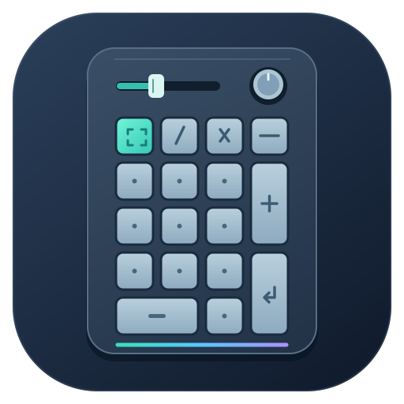
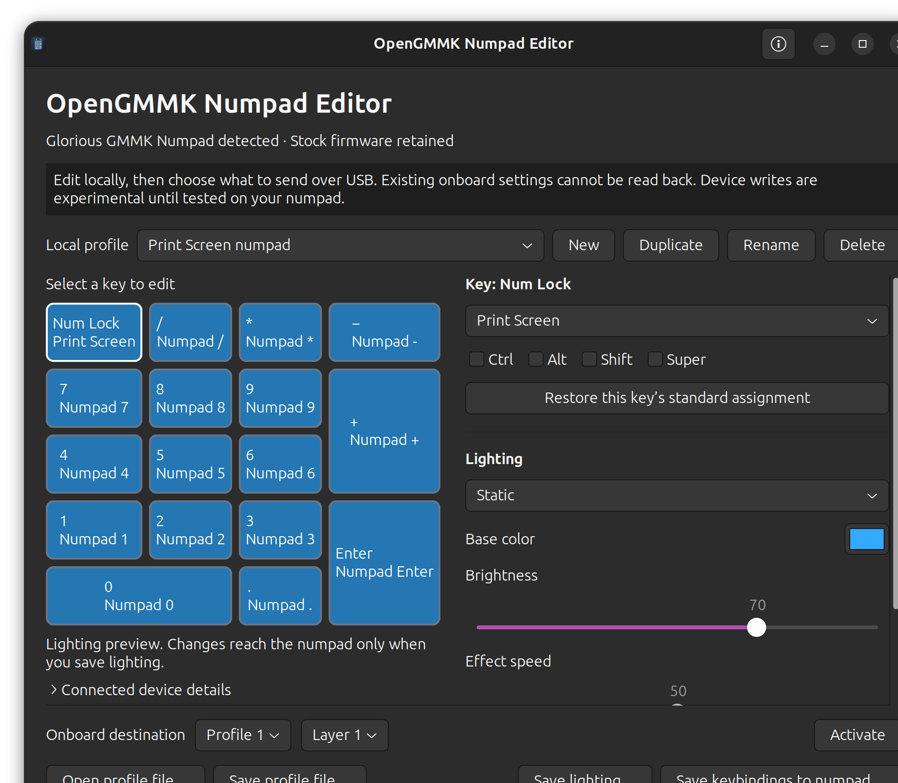

A native Linux app for editing Glorious GMMK Numpad keybindings, onboard profiles, and RGB while keeping the stock firmware. No Windows application or replacement firmware is required.
This is an independent community project, unaffiliated with Glorious.

Support: stock USB device 320f:5088, revision 0088, configuration interface 02, with the exact HID descriptor documented in PROTOCOL.md. Other models and revisions are deliberately rejected. Configuration over Bluetooth is not supported; the stock firmware is retained for ordinary Bluetooth operation.
The application has been reported to work well in daily use by its initial user. The automated checks and protocol review are documented in VALIDATION.md. Unplug/replug persistence, use on another computer, and every combination of hardware settings have not yet been independently verified.
Requires Linux, Python 3.10 or newer, and GTK 3.24. On Ubuntu, install the desktop dependencies if they are missing:
sudo apt install python3 python3-gi gir1.2-gtk-3.0
Download or clone the project, open its folder in a terminal, then install for your desktop user:
sh install.sh
Launch OpenGMMK Numpad Editor from Ubuntu's application menu. To run directly from the project folder:
sh run.sh
No PyPI dependencies are needed. The editor has been checked on Ubuntu 26.04 with GNOME; other distributions and desktops need their own testing.
Connect the numpad with its USB cable. If access is unavailable, click Set up USB access… in the app, or run:
sh install-device-access.sh
The setup uses Ubuntu's normal password prompt in a terminal to install a rule limited to this device's configuration interface. The editor does not receive the password. Reconnect the USB cable if needed, then click Refresh device. Run the app as your ordinary desktop user.
The Print Screen example is a standard layout with the top-left key changed to Print Screen. Opening it only changes the local draft.
A local profile is a draft, not a download of the numpad's current configuration. Saving a JSON file does not write to the numpad. The known status command reads battery and firmware information only; it cannot read or back up onboard keybindings, RGB, or other settings. Keep a local profile file for every configuration you want to restore.
The default profile folder is ~/Documents/GMMK Numpad Profiles. Files use format version 2. Version 1 drafts open with explicit default settings added and are saved as version 2.
| Action | Behavior |
|---|---|
| Save keybindings | Replaces all 17 key assignments in the selected layer. It also restores the encoder's press action to the manufacturer's calculator assignment. |
| Save lighting | Replaces the selected layer's global effect and complete custom-color overlay, plus the explicit indicator, sensitivity, and Bluetooth brightness settings shown in the dialog. |
| Activate | Selects an onboard profile slot and layer without uploading the local draft. |
A lighting save clears custom colors for keys without an override and for the side LEDs, allowing the global effect to control them. Removing the last override also clears the onboard overlay. Off clears global lighting and the custom-color overlay; saved override colors remain in the local draft. The separate knob/key glow behavior is left untouched. The on-screen preview shows colors without animating effects.
The manufacturer's lighting settings frame additionally sets Win Lock to 0, per-key enable to 1, and the debounce/latency byte to 8. These unknown onboard values cannot be read and preserved by the app. Initial indicator and sensitivity choices come from CORE's shipped application defaults: sensitivity 2, Num Lock indicator off, and battery indicator on. They are not a measurement of the connected device or verified firmware factory defaults. See PROTOCOL.md for the exact settings.
The editor does not replace firmware or configure rotary turn mode, slider actions, macros, or the separate knob sound-control/glow command. An existing Ubuntu slider volume helper remains separate; each Ubuntu computer needs that helper if you want the same host volume integration. A lighting save can change its explicit sensitivity setting, so check slider and knob behavior afterward.
Host remapping software can hide whether an onboard key change succeeded. If testing a key also mapped by Input Remapper or another utility, temporarily disable only that numpad mapping. Desktop shortcuts still determine what the computer does with a key such as Print Screen.
Keep profile backups outside the application folder, then run:
sh uninstall.sh
The installer uses ~/.local/share/gmmk-numpad-configurator and the launcher ~/.local/share/applications/io.github.opengmmk.NumpadEditor.desktop. Removal deletes only unchanged managed files and preserves added or modified files. Removing the app does not restore earlier onboard settings.
USB access is installed separately. To remove its rule:
sudo rm -- /etc/udev/rules.d/69-gmmk-numpad-configurator.rules
sudo udevadm control --reload-rules
Reconnect the numpad to refresh access. Keep any separately installed slider service and its access rule if you still use them.
Run the hardware-free test suite from the project folder:
python3 -B -m unittest discover -s tests -v
With GTK and a graphical session available, check UI construction with:
sh run.sh --smoke-test
See CONTRIBUTING.md for reporting hardware results and proposing changes, PROTOCOL.md for source evidence and packet details, and VALIDATION.md for what has and has not been verified. No proprietary CORE code, installer, firmware, or database is included.
Original project code and assets are available under the MIT License. Glorious and GMMK are trademarks of their respective owner; their use identifies supported hardware and does not imply endorsement.